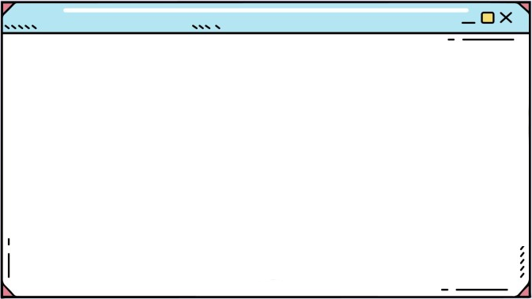

Sobre mim: Me chamo Karina Gonzalez, tenho 23 anos, nasci em São Paulo, e morei muitos anos no interior, numa cidadezinha chamada Indaiatuba, porém com meus 18 anos voltei sozinha para São Paulo para virar dentista. Depois de formada sentia que ainda não estava completa profissionalmente! Fui atrás de informação, e após muito estudo descobri as maravilhas do Desenvolvimento Web e acabei me apaixonando! Atualmente estou estudando na Trybe na minha casinha aqui em São Paulo com a minha cachorrinha chamada Sunna e meu namorado, que também cursa a Trybe.